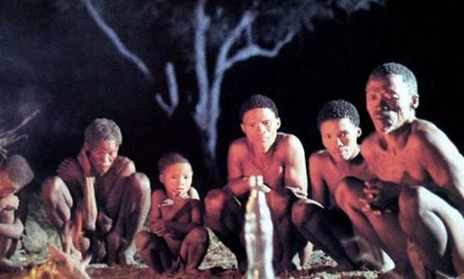

🍾🌍🚙 The Gods Must Be Crazy (1980) — CERTIFIED MGC AU-54

🏛 MGC LOWER COURT DOCKET
- ASSET TITLE: The Gods Must Be Crazy (1980) – The Official Kalahari Coca-Cola Planchet Ledger
- OFFICIAL REGISTRY GRADE: Certified MGC AU-54 (About Uncirculated / Unmatched Originality Crossover)
- LOWER COURT JURISDICTION: Lower Tribunal Room / Global Cult Comedy Docket
- CASE FILE: #073
- PRESIDING PANEL: Judge Tina, Chief of Cult Classics & Chief Grader MGC
📜 The Initial Inquest Bench Assessment & Luster Log
-
Baseline Bench Assessment:
Room Allocation ➔ AU-52 ( About Uncirculated ). Under our strict 5x numismatic magnifying lens, Jamie Uys’s 1980 Kalahari Desert comedy enters the chamber with a completely one-of-a-kind narrative alloy—there is truly no other film like it in cinema history. Centered on Bushman Xi’s deadpan quest to toss a “cursed” glass Coca-Cola bottle off the edge of the earth, the film radiates effortless visual storytelling. However, the initial bench assessment placed the specimen at AU-52 due to three distinct technical and structural flaws under judicial review:
🚨 The Three Judicial Motions Under Review:
1. The Under-Cranked Speed-Up Gag Wear: OVERRULED.
-
The Verdict:
The initial technical objections regarding sped-up, silent-era camera tricks during the Land Rover and slapstick sequences are completely thrown out. The High Court rules that these classic physical-comedy mechanics do not cheapen the alloy—they inject pure Buster Keaton and Charlie Chaplin kinetic energy directly into the frame, keeping the visual comedy crisp, timeless, and hilarious without relying on cheap dialogue.
2. The Clumsy Microbiologist & Guerilla Subplots: OVERRULED.
-
The Verdict:
Objections claiming that the bumbling biologist’s romance with the schoolteacher and the cartoonish revolutionary subplot distract from Xi’s desert journey are formally overruled. Under appellate review, these colliding worlds provide essential comedic contrast—highlighting the absurd, stressed-out chaos of “civilized” society right alongside Xi’s calm, grounded wisdom in the Kalahari. Every thread weaves together into a wildly entertaining, cohesive payoff.
3. Dated 1980s Audio & Post-Sync Dubbing Bleed: SUSTAINED.
-
The Verdict:
Under our strict 5x magnifying lens, the post-synced sound effects, heavy narration dependency, and localized 1980s audio flatness leave noticeable handling marks on the technical surface. While the storytelling and comedy soar, this dated audio engineering remains sustained on the record as the sole technical scuff keeping the specimen from climbing higher into the upper AU shelves.
⚖️ Final Court Decree
- By overruling both the slapstick mechanics and subplot objections—recognizing a singular, irreplaceable piece of cinema that stands completely alone in film history—the High Bench vaults this specimen straight out of the XF tier and across the About Uncirculated threshold. Only the minor 1980s audio-sync wear holds it from the upper shelves of the AU vault.
- Permanently sealed in the global cult archives as a Certified MGC AU-54 Specimen. Case Closed. 🥈🍾 Kalahari Luster Locked. 🌍⚖️

• © 2026 MOVIE GRADING CONSENSUS. All Sovereign Rights Reserved.